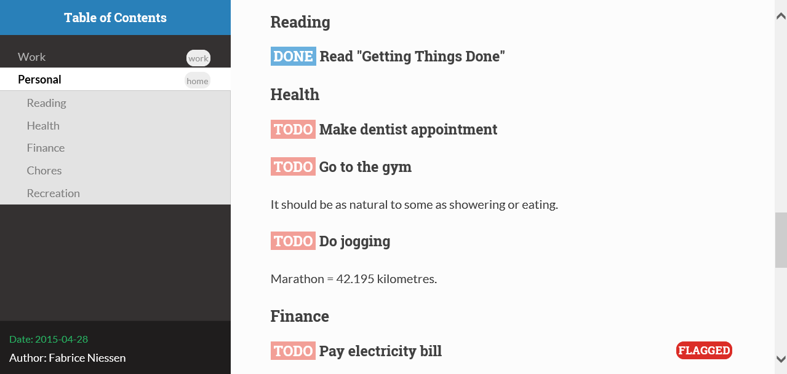

How to export Org mode files into awesome HTML in 2 minutes
Table of Contents


1. Overview
1.1. Description
Though you can easily override CSS stylesheets and add your own HTML themes, we can say (or write) that Org mode provides a basic HTML support.
Org-HMTL themes is an open source framework for providing you with a list of very nice (cross-browser) themes for all your Org documents. Use them to style your docs, and your colleagues will come up to tell you that you are a genius!
Share this content by tweeting this page:
TweetFollow fniessen on Twitter for updates on Org-HTML themes!
1.2. Requirements
Org mode version 8 (or later) is required.
If such a version is not bundled with your Emacs, install one from ELPA.
2. Gallery
This is a list of available HTML themes for Org mode, which you can use right now! Well, I hope to have more than one in a couple of weeks…
2.1. Bigblow
Bigblow is perfect for your work: it is a clean design aimed at optimal Org mode experience in your browser. It looks just awesome!
Click on the image for a quick demo of Bigblow (2:49 min, no audio).
Keyboard shortcuts to save time and boost your productivity:
| Shortcut | What it does |
|---|---|
? or h |
Access the dashboard |
n |
Move to the next main heading |
p |
Move to the previous main heading |
b |
Scroll up |
< |
Scroll to top |
> |
Scroll to bottom |
- |
Collapse all |
+ |
Expand all |
r |
Go to next task in list |
R |
Go to previous task in list |
q |
Stop reviewing the list of tasks |
g |
Reload the page |
Quotations about Bigblow
"Very very nice, I enjoy it a lot."
– Ista Zahn
"This is awesome. I love it!"
– Rainer M Krug
"This is awesome!!"
– Mehul Sanghvi
"This very nice html theme. […] I cannot use another emacs-theme than your
emacs-leuven-theme, and it is going to be probably the same with your html
theme!"
– Joseph Vidal-Rosset
"Thanks a lot for sharing […] the wonderful Bigblow theme. I create lot of
specification for other team members to use. It has always been a trouble to
share and maintain such spec. Now, I can create a much neater spec which is
available for the team's reference as a webpage."
– Shankar R.
"I like Bigblow the best. I've exported most of my Org files using this theme
and published them within my company's intranet. Thanks for sharing this
wonderful package!"
– Richard K.
2.2. ReadTheOrg
ReadTheOrg is a clone of the official – and great! – theme used in the Read The Docs site. It gives a beautiful and professional style to all your Org docs.
Thanks to its creator(s)!

While the original theme shines on mobile devices as well, ReadTheOrg does not stay completely functional.
I don't have a lot of time to maintain this project due to other responsibilities. Help is welcome to work on that (and eventually improve the default structure of the HTML export)!
Quotations about ReadTheOrg
"OMG. The ReadTheOrg theme for exported HTML from org mode files is eye
wateringly beautiful. Thank you!"
– Rob Stewart
"It is fantastic, so beautiful. I will switch several of my pages over to
this theme."
– Carsten D.
"That is incredibly impressive. Thanks for this."
– Noah R.
"Thank you! I enjoy your themes. The best ones I've ever found."
– Kang T.
"Awesome theme. Wonderful job. You're doing a wonderful thing — it will
enable people (at least those who use Emacs and Org mode) to put together
on-line reference works in a much-more usable fashion than is currently
available."
– D. C. Toedt
"Extremely useful."
– Thomas S. Dye
3. Demo
I've written a demo page for the themes that provides a maximal working support of Org mode syntax.
Please see the Org mode refcard page for full examples of headings, code, admonitions, footnotes, tables and other details.
4. Using a theme
Using a theme from the theme gallery for your own Org documents is very easy:
You add a
#+SETUPFILE:directive in the preamble of your document (to include the necessary CSS and JavaScript files).You can either use an URL of the following type for the "setup file" of your chosen theme:
(where
THEME-NAMEistheme-bigblowortheme-readtheorg)or, if you cloned or downloaded the Org-HTML themes project – to get no dependency on an Internet connection –, use a (relative or absolute) path to the local "setup file" and copy the "styles" folder from the cloned folder into the same folder as the file you want to export:
#+SETUPFILE: PATH/TO/GIT/REPO/org/theme-NAME-local.setup- Then, you export your Org mode file to HTML with
org-html-export-to-htmlor withC-c C-e h h.
5. Customizing a theme
You love those themes, but you still would like to override particular HTML tags? Some examples do follow…
Before doing that, though, if you think it really is an improvement that could server other persons as well, including me, you're invited to submit your change…
5.1. Change the background code blocks
Here's an example to insert into your Org documents:
# Change the background of source block. #+HTML_HEAD: <style>pre.src{background:#343131;color:white;} </style>
5.2. Unset body width limit of ReadTheOrg
Solution provided by Malcolm Cook:
#+HTML_HEAD: <style> #content{max-width:1800px;}</style> #+HTML_HEAD: <style> p{max-width:800px;}</style> #+HTML_HEAD: <style> li{max-width:800px;}</style
6. Contributing
6.1. Issues
Report issues and suggest features and improvements on the GitHub issue tracker.
6.2. Patches
I love contributions! Patches under any form are always welcome!
6.3. Donations
If you use the org-html-themes project (or any of my other projects) and feel it is making your life better and easier, you can show your appreciation and help support future development by making today a donation through PayPal. Thank you!
Regardless of the donations, org-html-themes will always be free both as in beer and as in speech.
6.4. Follow me
I have an fniessen account on Twitter. You should follow it.
7. License
Copyright (C) 2011-2020 Fabrice Niessen.
Author: Fabrice Niessen
Keywords: org-mode html themes
This program is free software; you can redistribute it and/or modify it under the terms of the GNU General Public License as published by the Free Software Foundation, either version 3 of the License, or (at your option) any later version.
This program is distributed in the hope that it will be useful, but WITHOUT ANY WARRANTY; without even the implied warranty of MERCHANTABILITY or FITNESS FOR A PARTICULAR PURPOSE. See the GNU General Public License for more details.
You should have received a copy of the GNU General Public License along with this program. If not, see http://www.gnu.org/licenses/.